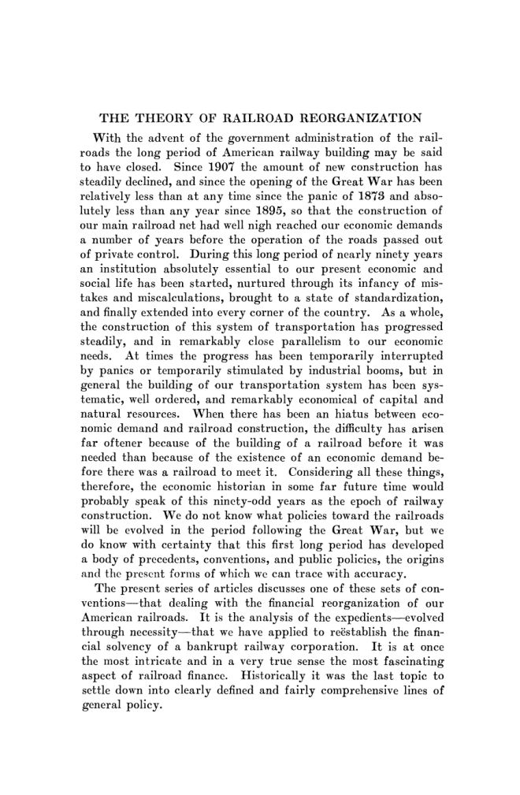

Dewing, 1918: como se reorganiza uma ferrovia falida
Leitura: 10 min
Arthur S. Dewing reconstitui a história da reorganização financeira das ferrovias americanas falidas, da leniência com os credores até a regra de cortar encargos fixos e exigir dinheiro novo dos acionistas.


Em agosto de 1859, a New York and Erie Railroad foi entregue a administradores judiciais. Concluída em 1851, nunca prosperara. Sofrera com o pânico de 1857, com inundações e com uma greve de maquinistas, e seu terminal em Jersey City estava inacabado. Havia sentenças não pagas de mais de US$ 700 mil, uma dívida flutuante de mais de US$ 8 milhões e uma segunda hipoteca de US$ 4 milhões vencida e não paga; a companhia deixara de pagar juros até sobre os títulos de primeira hipoteca e ganhava menos que as despesas de operação. O presidente fora à Inglaterra pedir socorro aos investidores britânicos, sem resultado.
Arthur S. Dewing usa o caso para mostrar como era branda a reorganização da época, no primeiro de três artigos sobre o tema, publicado no número de dezembro de 1918 da American Economic Review. O segundo trataria do procedimento nos tribunais e nos comitês, e o terceiro, dos planos e de seus resultados.
Por que olhar agora para as reorganizações?
Com a administração das ferrovias pelo governo, escreve Dewing, encerrava-se o longo período de construção ferroviária americana. Desde 1907 a construção nova vinha caindo, e desde o início da guerra fora relativamente menor que em qualquer época desde o pânico de 1873. Em quase noventa anos, a rede foi construída em paralelo notável às necessidades econômicas; quando houve descompasso, foi mais por construir antes da demanda do que o contrário. O período deixou um corpo de convenções, e a reorganização financeira das ferrovias falidas foi o último tema a se assentar em linhas gerais.
Dewing trata o tema como um problema essencialmente americano, sem precedentes históricos ou estrangeiros, e como uma das realizações mais originais das finanças do país. A fonte primária são as circulares, relatórios e planos dos comitês de reorganização, resumidos no Commercial and Financial Chronicle; a literatura secundária se resumia a um estudo abrangente, o de S. Daggett, e a poucos artigos.
Por que as ferrovias faliam?
Quase todas as administrações judiciais resultaram de insolvência efetiva ou iminente, entendida como incapacidade de pagar obrigações vencidas: o principal da dívida fundada, raramente; os juros dessa dívida, nos casos antigos; e as dívidas correntes com materiais e trabalho, nos recentes. O crédito abalado era só o sinal externo de uma capacidade de ganho reduzida, e esta, de uma fraqueza mais profunda: a superexpansão. Nos primeiros tempos, expansão em territórios desenvolvidos sem medir os custos; no terceiro quarto do século XIX, expansão em territórios que não sustentavam uma ferrovia; depois, ramais construídos na esperança de criar tráfego; e por fim as fraquezas do tamanho, com fusões de sistemas fracos e incursões em outros negócios.
Com a expansão, o retorno por unidade de investimento caía, numa espécie de rendimento decrescente do capital, enquanto a dívida fundada crescia em relação ao capital e por milha. Quando os juros passavam dos ganhos, a companhia falia, mas a falência era adiada por paliativos: a manutenção era cortada até o osso e a dívida flutuante se acumulava. O tribunal recebia, assim, uma ferrovia deteriorada e carregada de dívida.
O que toda reorganização precisa fazer?
Daí os dois fins de toda reorganização. O primeiro é refazer o plano financeiro para que os encargos fixos fiquem abaixo dos ganhos líquidos; reduzir a extensão da linha seria a outra saída, mas as administrações sempre atribuíam a falência a causas superficiais e preferiam receitar repouso, e não cirurgia. O segundo é dinheiro novo, para reparar a linha e pagar as dívidas anteriores ou os certificados emitidos pelos administradores judiciais. Como o crédito da ferrovia falida é baixo, esse dinheiro só pode vir dos antigos acionistas, os únicos interessados o bastante para fazer sacrifícios. Dewing define a reorganização, assim, como uma mudança abrangente do plano financeiro, imposta pela falência real ou iminente, que reduz os encargos fixos e obtém dinheiro novo pelo sacrifício dos detentores de títulos.
A história dessa prática, diz, é a de uma percepção gradual de que o repouso, para curar de vez, precisava vir acompanhado de cirurgia. Ele a divide em cinco períodos separados pelos pânicos: até as falências de 1857, quando as ferrovias eram apenas postas a andar de novo; de 1860 aos anos seguintes ao pânico de 1884, quando grandes sistemas passaram a exigir uma política; de 1884 a 1893, quando os tribunais reconheceram o caráter de serviço público das ferrovias; de 1893 a 1908, com as grandes reorganizações; e o período recente, das falências de 1913 e 1914, resolvidas com rapidez e pouco atrito.
Quanto se pedia aos credores?
A New York and Erie de 1859 foi reorganizada em 1862 sem nenhum sacrifício dos credores hipotecários; a pequena contribuição cobrada dos acionistas serviu para pagar cupons atrasados, e a dívida flutuante foi convertida em ações preferenciais. A Erie voltou a falir em 1875 e, na reorganização de 1878, apenas converteu por algum tempo cupons atrasados de alguns títulos júniores em títulos de 7%, com pequena contribuição dos acionistas: uma redução temporária e nenhuma permanente dos encargos.
“As ferrovias que faliram no início dos anos 1870 não foram realmente reorganizadas, foram apenas regalvanizadas.” (“the railroads which failed in the early seventies were not really reorganized-they were simply regalvanized”)
A frase, de J. F. Crowell, resume para Dewing o espírito das reorganizações depois de 1873. A Wabash, St. Louis and Pacific, que faliu em maio de 1884, já mostra outra coisa. Era o primeiro dos grandes sistemas americanos a se entregar a administradores judiciais, com mais de 2 mil milhas de linha, treze emissões de títulos de primeira hipoteca por divisão com juros médios de quase 7%, US$ 16 milhões de títulos gerais de 6%, US$ 6 milhões de títulos com garantia colateral, US$ 27 milhões em ações ordinárias e US$ 23 milhões em preferenciais.
Um plano suplementar, sob a justificativa de consolidar as linhas, obrigou por execuções separadas os detentores dos antigos títulos de primeira e de segunda hipoteca, com juros de cerca de 7%, a aceitar novos títulos de 5% sob duas hipotecas gerais. Houve, assim, redução permanente dos encargos e algum sacrifício de todos, ainda que leve.
O que mudou com a Atchison?
O pânico de 1893 derrubou sistemas completos e bem organizados. A Atchison, Topeka and Santa Fe, com mais de 7 mil milhas e a única linha de Chicago ao Pacífico, faliu no início de 1894. Reorganizada em 1889, crescera desde então pela aquisição de uma ferrovia após outra; um auditor independente encontrou um déficit médio de mais de US$ 1,25 milhão entre 1891 e 1894, apesar de a companhia ter falsificado os livros para mostrar superávit. Havia US$ 150 milhões de títulos de primeira hipoteca a 4% e US$ 84 milhões de segunda hipoteca, além de US$ 11 milhões em dívidas correntes.
Os credores ingleses propuseram apenas converter os títulos de segunda hipoteca em títulos de renda de 5%, sem contribuição, e cobrar dos acionistas. O plano final de 1895 foi outro: os credores de primeira hipoteca receberam 75% do principal em novos títulos de 4%, mais 40% em títulos de renda, e os de segunda hipoteca trocaram seus títulos por ações preferenciais e pagaram contribuição de 4%, passando de credores a sócios. Para Dewing, a troca de um plano pelo outro marca a virada histórica da prática americana.
Ele explica a leniência anterior por três motivos: a crença de que a indústria ferroviária era lucrativa por natureza e absorveria qualquer encargo; a disposição dos tribunais de proteger o credor que se opusesse a sacrifícios; e a grande parcela de títulos em mãos inglesas e continentais, cujos detentores agiam em bloco. Depois de 1893, a depressão, a influência de J. P. Morgan em favor da distribuição dos sacrifícios e a percepção de que a era da promoção acabara mudaram a regra.
Como é a reorganização contemporânea?
Dewing descreve a prática corrente como um compromisso entre a interpretação estrita das obrigações legais e a necessidade pública de manter a ferrovia como empresa solvente. Os tribunais, embora digam seguir a letra da lei, permitem que todos os interesses participem desde que se prometa um serviço melhor ao público.
“Conveniência temperada pela justiça, e não justiça temperada pela conveniência.” (“expediency tempered by justice, rather than justice tempered by expediency”)
Se a propriedade sob uma hipoteca ganhou seus encargos, a hipoteca fica; se não ganhou, os credores têm de aceitar redução ou extinção do direito a renda fixa, pois a alternativa, ficar com a ferrovia na execução, pouco lhes promete. O sindicato de banqueiros que financia a reorganização dita o plano: uma nova companhia emite títulos de encargo fixo, em volume cujos juros fiquem abaixo dos ganhos líquidos durante a administração judicial; títulos de renda ou ações preferenciais não cumulativas; e ações ordinárias, distribuídas com liberalidade para compensar os sacrifícios. O dinheiro novo vem da venda de títulos ao sindicato e das contribuições dos antigos acionistas, que o sindicato garante. Daí a anomalia que fecha o artigo: a falência de uma ferrovia aumenta o total de títulos emitidos.
Na minha leitura
Na minha leitura, o artigo descreve a passagem de uma reorganização feita por adiamento para uma feita por reconhecimento de perdas. Enquanto se supunha que o crescimento futuro resolveria tudo, bastava converter cupons e esperar; quando essa suposição caiu, passou-se a ajustar os direitos de cada classe de credor ao que a propriedade efetivamente ganhava. A regra de que os encargos fixos devem caber nos ganhos líquidos é, no fundo, uma regra de avaliação: o valor econômico do ativo é sua capacidade de ganho, e não o valor de face das dívidas.
A estrutura que Dewing descreve, com dívida reduzida, títulos de renda e ações para os credores júniores e dinheiro novo dos antigos acionistas, é a mesma lógica que orienta a recuperação de empresas: preservar a empresa em funcionamento quando ela vale mais operando do que liquidada, e distribuir a perda pela ordem de prioridade dos direitos. A anomalia final, de uma falência que aumenta o total de títulos, mostra que a reorganização troca obrigações fixas por participações contingentes.
Glossário
- Administração judicial (receivership)
- gestão de uma empresa insolvente por administradores nomeados pelo tribunal.
- Dívida fundada
- dívida de longo prazo, em geral títulos com garantia hipotecária.
- Dívida flutuante
- dívida de curto prazo, sem garantia, com fornecedores e bancos.
- Encargos fixos
- juros e outros pagamentos devidos qualquer que seja o resultado da empresa.
- Título de renda (income bond)
- título cujos juros só são pagos se houver lucro.
- Ação preferencial não cumulativa
- ação com prioridade nos dividendos, sem direito aos dividendos de anos sem pagamento.
- Contribuição (assessment)
- pagamento exigido dos antigos acionistas para participar da nova companhia.
- Hipoteca geral (blanket mortgage)
- hipoteca que cobre toda a rede, em vez de uma divisão.
- Sindicato de banqueiros
- grupo de bancos que se compromete a financiar e garantir uma operação de títulos.
Fontes
- The Theory of Railroad Reorganization — Arthur S. Dewing (pp. 774–795). JSTOR · Internet Archive (PDF)
- Edição completa, com os demais artigos: Nº 154 do Arquivo.
Documento em domínio público (EUA, publicado antes de 1931), via JSTOR Early Journal Content e Internet Archive. Resumo e comentário do autor deste site, sem afiliação com a American Economic Association. Encontrou um erro? Escreva: a correção é publicada no próprio texto, com data.
← Rubinow, 1918: um índice mensal da dependência em Nova York ↑ Nº 154 · Um índice da dependência, o custo de crescer e as ferrovias falidas